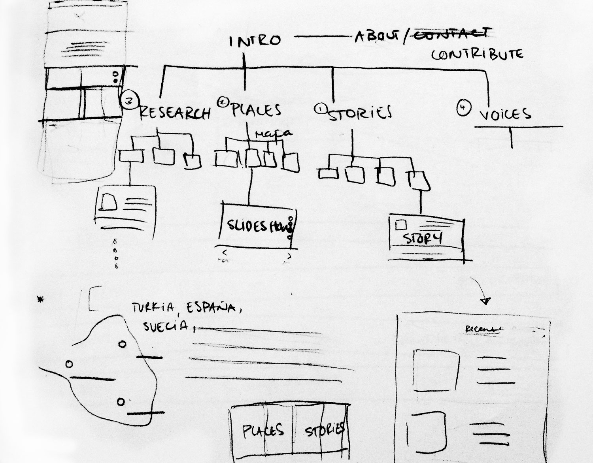

The Uprooting is a documentary project that explores the refugee crisis through the stories of its protagonists. It aims to go beyond the daily headlines and forefront the voices of refugees in an examination of the traumas of war, the challenges of exile and the contours of an evolving diaspora. You can read more about the project on the website theuprooting.eu
The Uprooting
A screenshot of the homepage
How it started
I was approached by a talented photographer Miguel Winograd with the idea to create a website that would tell the stories of Refugees arriving to different countries of Europe. He himself was in Turkey for two months deeply involved in the topic and wanted to tell the stories of these brave travellers. In collaboration with the works and writings of photographers Lubna Mrie, Eduardo Soteras Jalil and Axel Öberg, I worked Miguel Winograd to design and implement a website that would tell these stories to the world. The initial sketches and sitemaps outlined the vision that Miguel had for the platform; he wanted a clean and simple website that would illustrate the stories through series of texts, voice recordings, and photo slideshows. The homepage was clear from the beginning: we all wanted to show a video of a lifevest floating and a general introduction to the project.
A mockup done in Balsamiq

Sitemap sketches
Obstacles
One problem I ran into when developing the website was integrating an interactive map for the page about “places” . The original idea was to have a map highlighting each place which a story had been written about. Because we were short on time and we know this would be a complicated feature to implement, we decided to have the places in a list style instead, with a map illustration as the background.

Original idea, mock up in Sketch
Alternative idea, screenshot of live website
Outcomes
The Uprooting was featured in Quartz in 2016 and exhibited in an show in
ICP in New York.
The website will remain live in memory of all the stories gathered around the world.
You can visit the website at theuprooting.eu